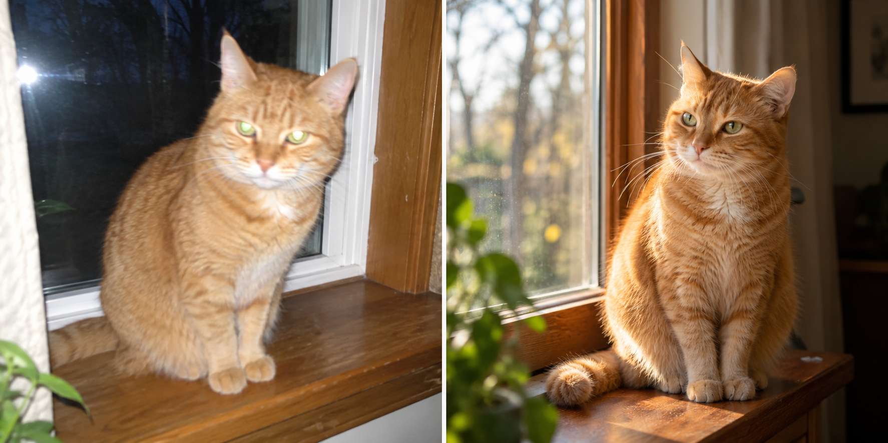
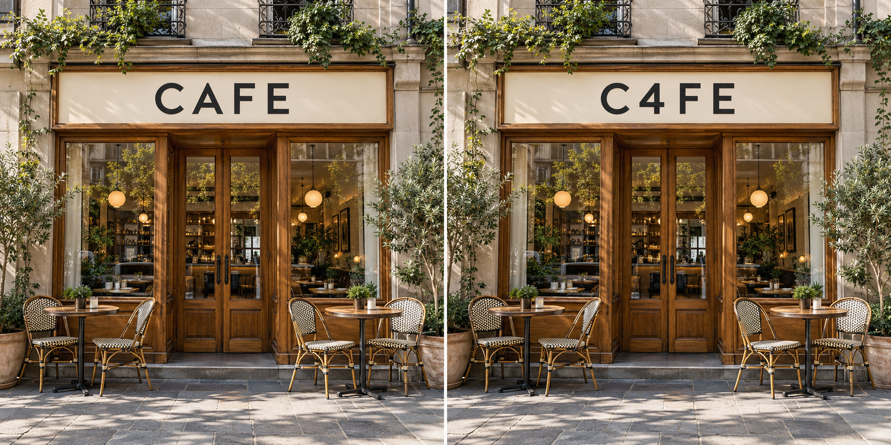
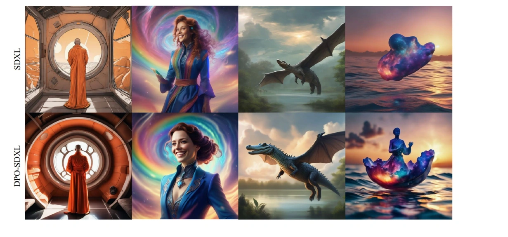
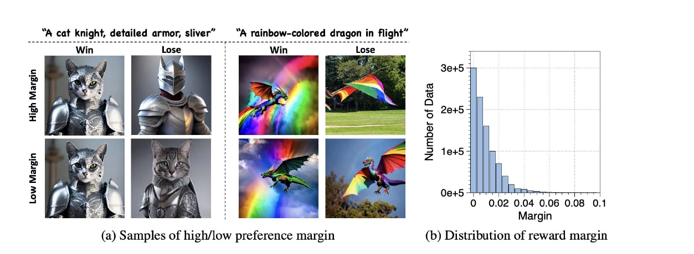
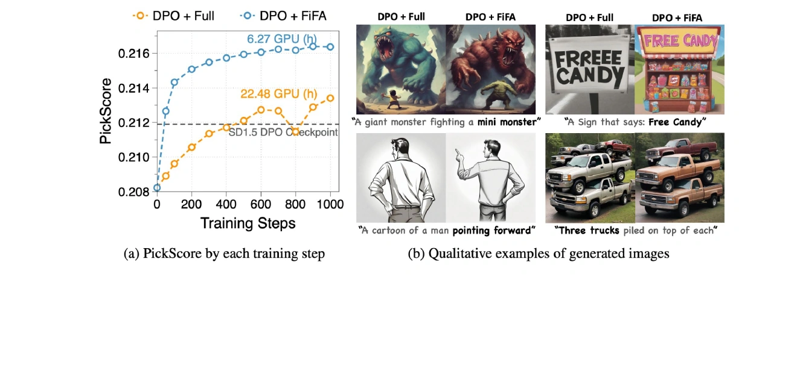
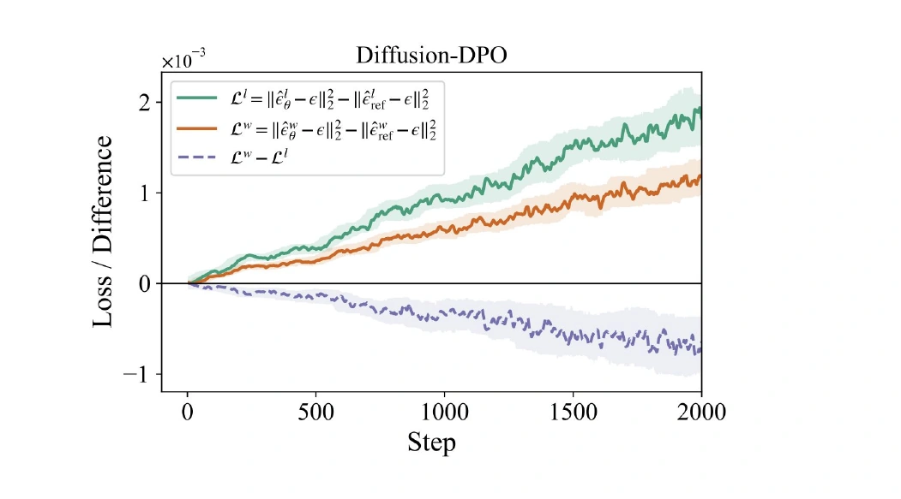
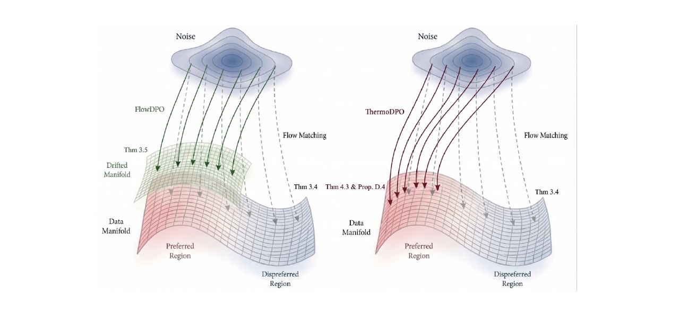
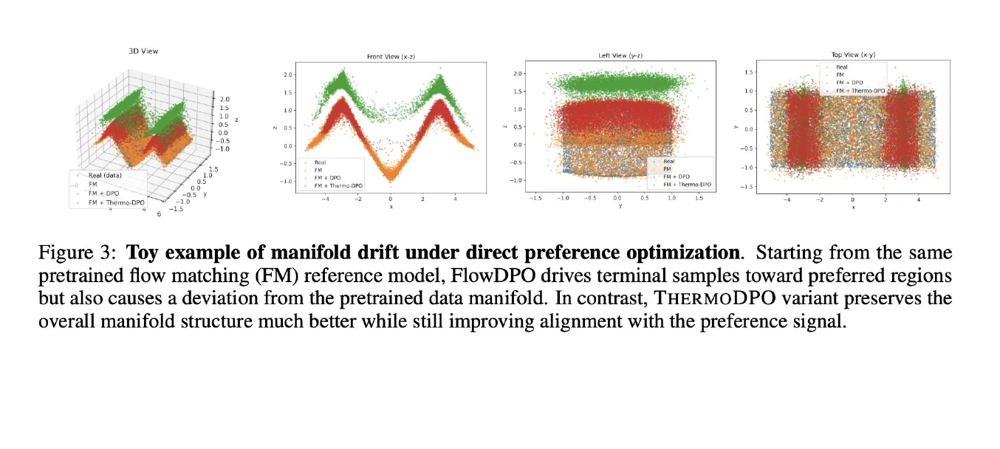

Чему учить после претренинга
Претренинг уже даёт модели связь между текстом и изображением. По запросу про кота она должна выдавать кота; по запросу про ночной город — ночной город. Но внутри этого соответствия остаётся много вариантов. Один свет выглядит профессионально, другой — плоско. Одна текстура убедительна, другая похожа на пластиковую. В тексте запроса эти предпочтения могут вообще не быть сформулированы.
Одна подпись: «Рыжий кот на деревянном подоконнике»

После претренинга модель уже умеет рисовать кота по запросу. Но до нужного нам качества её ещё нужно довести: хочется чаще получать красивую картинку справа, а не снимок со вспышкой слева. Обычная подпись не объясняет модели эту разницу — она подходит к обоим изображениям. Нужен следующий этап обучения, на котором мы явно зададим, какие результаты предпочитаем.
Это задача preference optimization: передать модели наши предпочтения, чтобы она чаще генерировала нужные результаты. Они могут касаться света и композиции, точности выполнения запроса, читаемости текста или отсутствия артефактов.
Такой сигнал можно задать двумя способами: выбрать лучший результат из пары или оценить каждый результат числом. От этого зависит, как мы будем обучать модель.
DPO: учиться на парах
DPO (Direct Preference Optimization) удобно использовать, когда мы понимаем, какой результат нам нравится, но не можем нормально формализовать это предпочтение. Например, хочется более приятный свет, живую фактуру кожи или определённое настроение кадра. Как собрать всё это в одну оценку? Написать метрику или сделать reward-модель, которая точно передаёт наш вкус, бывает сложно. По сути, хочется оптимизировать vibe.
При этом выбрать из двух картинок часто проще, чем объяснить своё предпочтение числом: «вот эта выглядит как надо». Для одного запроса собираем такую пару: выбранная картинка — winner, вторая — loser. На этих сравнениях DPO учит модель отдавать предпочтение результатам, которые нам нравятся. Так можно передать ей вкус фотографа или дизайнера через конкретные примеры.
Один запрос: «Портрет девушки за столиком у окна в кафе»
RL: учиться по оценке результата
Во втором варианте генератор создаёт изображение, а reward-модель возвращает число: насколько результат соответствует выбранному критерию. RL (reinforcement learning) использует эти оценки, чтобы обновлять генератор в сторону более высокого ожидаемого reward. Затем модель генерирует новые результаты, и цикл повторяется.
Например, хотим исправить надписи на изображениях. OCR распознаёт текст на вывеске, мы сравниваем его с запросом и получаем score. Генератор получает конкретный сигнал: правильная надпись оценивается выше, чем надпись с ошибкой.
Запрос: «Фасад кафе с вывеской CAFE»

CAFE4 / 4 символа → 1,00
C4FE3 / 4 символа → 0,75
Что оптимизирует DPO
Для запроса есть два изображения: предпочтительное и отвергнутое . Введём неявный reward модели — логарифм отношения вероятности изображения у обучаемой модели к его вероятности у reference-модели:
Почему берём именно отношение вероятностей? Нас интересует, насколько обучаемая модель стала предпочитать изображение по сравнению с исходной. Если вероятность выросла, отношение больше единицы, а логарифм положительный. Если упала — отрицательный. Так reference задаёт точку отсчёта для каждого изображения.
Но в данных у нас нет численного reward: известно только, что предпочли . Чтобы связать reward с такой меткой, используем модель парных предпочтений Bradley–Terry. Она задаёт вероятность выбора winner через сигмоиду разницы reward:
При равных reward вероятность равна ½. Чем выше reward winner относительно loser, тем увереннее модель предсказывает выбор winner. Это предположение о том, как устроены предпочтения, а не следствие самой парной метки.
Теперь хотим, чтобы модель присваивала наблюдаемым выборам высокую вероятность. Минимизируем отрицательный логарифм этой вероятности по датасету пар — получаем DPO-loss:
Внутри сигмоиды находится разница между winner и loser относительно reference. Хотим, чтобы модель сильнее предпочитала winner. Но сама функция видит именно разницу. Она не требует, чтобы каждый шаг отдельно улучшал абсолютное качество winner. К этому ограничению мы ещё вернёмся.
Как перенести это на диффузию
В языковой модели мы можем вычислять вероятность заданной последовательности через вероятности токенов. В диффузионной модели изображение получается из процесса денойзинга, и напрямую подставить его likelihood в ту же формулу сложнее.
Чтобы адаптировать DPO к диффузионным моделям, применим вариационную оценку, как в Diffusion-DPO. Тогда loss можно записать через ошибки предсказания шума на winner и loser. Сначала обозначим разницы этих ошибок у обучаемой и reference-моделей:
Итоговый loss:
Вспомним пару портретов: один с обычным светом, другой — с cinematic. На претренинге модель училась восстанавливать оба изображения из шума. Теперь мы говорим ей: «при том же запросе хотим чаще получать второй вариант». DPO меняет обучение так, чтобы восстановление картинки с cinematic-светом получало преимущество перед восстановлением картинки с плоским светом. Через много таких пар модель может подхватить наше предпочтение в освещении, хотя мы нигде не записали, что именно делает свет красивым.
Посмотрим, как такое обучение меняет готовые изображения. Ниже — результаты SDXL до и после Diffusion-DPO на одних и тех же запросах.

В каждой паре изменения разные:
- Монах. В исходной картинке помещение похоже на рисованную иллюстрацию с плоскими заливками. После DPO появляются глубокие тени, блики на круглой раме и более выраженные складки одежды. Сцена выглядит объёмнее.
- Портрет. Вместо поясной фигуры с маленьким лицом получаем более крупный портрет. Лучше видны черты лица, пряди волос и отделка синего костюма; лицо сильнее выделяется на фоне цветного вихря.
- Дракон. В верхнем ряду он почти целиком в тени. В нижнем — крупнее и лучше освещён: различимы чешуя на шее, гребень на спине и перепонки крыльев.
- Сцена над водой. Вместо бесформенного светящегося объекта появляется фигура человека на чашеобразной форме. Цветное свечение отражается в воде. Здесь меняется уже сама структура объекта, а не только его свет или фактура.
В этом и практический смысл DPO: через выбор картинок можно передать предпочтение к более объёмному свету, проработанным деталям и выразительной подаче, не задавая для каждого из этих качеств отдельную формулу.
Что делать с β
В нашем loss есть параметр , который умножает разницу ошибок перед сигмоидой:
β масштабирует разницу ошибок на winner и loser перед сигмоидой. При большом β даже небольшой перевес в пользу winner может сдвинуть сигмоиду близко к единице: пара уже выглядит уверенно разделённой, и сигнал от неё ослабевает. При меньшем β для такого насыщения нужен больший перевес.
На практике β подбирают вместе с learning rate. Если сигнал от пар затухает слишком быстро, модель не успевает нормально пройти по данным и усвоить предпочтение. Нужно дать ей время поучиться, а не сразу загнать loss в насыщение. Поэтому важен баланс: насколько быстро меняется модель и насколько быстро выбранный β ослабляет сигнал.
Какие пары действительно полезны
Для обучения нужны winner и loser. Но какие картинки выбирать в эти пары, чтобы модель выучила нужное нам предпочтение?
FiFA: разница, качество запроса, разнообразие
Самая неприятная ситуация для парного обучения — много примеров, где победитель определён неуверенно. Один разметчик предпочёл свет, другой — композицию, третий просто выбрал другую стилистику. Если собрать таких пар очень много, неопределённость не обязательно исчезнет.
Разницу оценок winner и loser называют preference margin. Если оценщик почти не различает картинки, margin маленький; если уверенно предпочитает одну — большой. На примерах с котами-рыцарями и драконами это видно глазами: в low-margin парах оба варианта выглядят допустимыми, а в high-margin парах один явно нарушает запрос.

На этом строится отбор в FiFA. Метод учитывает три вещи: насколько явно winner лучше loser, насколько качественно сформулирован запрос и насколько разнообразны запросы в выбранном наборе. Пары ранжируются по общему score.
В своей практике я читаю эти три составляющие так. Во-первых, должно быть понятно, почему winner лучше. Во-вторых, запрос должен позволять судить о результате: по слову «кот» трудно понять, какой именно результат ожидался. В-третьих, выбранные примеры должны покрывать нужные домены. Если все сильные пары оказались портретами, нельзя автоматически ожидать того же улучшения в остальных сценах.
Это не означает, что длинный промпт всегда лучше короткого. Детализация полезна тогда, когда она делает критерий выбора яснее. Много слов без понятного запроса не создают хороший preference-сигнал.

Для меня вывод здесь такой: сначала стоит добиться понятного сигнала в каждой паре, а уже потом наращивать объём данных. Больше неоднозначных сравнений не обязательно означает больше полезного обучения.
Я обычно собираю данные в несколько раундов: начинаю с автоматической или синтетической разметки, затем генерирую новые примеры улучшенной моделью и отдаю их людям.
Человеческая разметка дорогая прежде всего организационно. Нужно договориться о критериях, объяснить их разметчикам, проверить согласованность. Если нужны именно профессиональные предпочтения, человека трудно заменить усреднением большого числа случайных голосов.
Поэтому сначала я бы отбирал пары, в которых причина выбора уже понятна. Для такого отбора можно использовать reward-модель, а неоднозначные случаи оставить для ручной оценки.
А если обе картинки хорошие?
Допустим, у двух плохих картинок margin большой. А у двух отличных — маленький. Неужели мы выберем первую пару только потому, что её проще различить?
Нет: большой margin не заменяет хорошего winner. Хочется одновременно иметь сильный положительный пример и понятную разницу с отрицательным. Если winner сам по себе плохой, мы выбираем неудачную цель для модели.
А две отличные картинки необязательно заставлять соревноваться. Если обе нам подходят, можно обучаться восстанавливать каждую из них без loser-компоненты — использовать их для SFT. Здесь мы уже отбираем хорошие примеры сами по себе, а не пытаемся найти худший внутри каждой пары.
Моя исходная рекомендация проще: сначала обеспечить хороший winner и явно худший loser. Сложные правила для неоднозначных пар я бы добавлял после того, как этот базовый вариант заработал.
Можно ли брать изображения другой модели?
Off-policy данные — одна из удобных сторон DPO. Пары можно собрать заранее; необязательно получать каждый пример из текущего checkpoint. Можно использовать и пары от разных генераторов: сильная модель даёт winner, более слабая — loser.
Так можно получить понятный сигнал без сложной системы оценивания. Но вместе с качеством переносится характер генератора: свет, насыщенность, фактуры. Поэтому сходство результата с моделью-учителем само по себе ещё не доказывает, что мы выучили нужное предпочтение.
Есть и отдельный вопрос про негативы. Если loser настолько далёк от текущего распределения, что наша модель почти никогда не выдаёт ничего похожего, насколько полезно от него отталкиваться? У меня нет универсального ответа. Мой опыт с более слабой и более сильной моделью был положительным, но из этого не следует, что чем хуже loser, тем лучше обучение. Вариант с внешним winner и on-policy loser остаётся отдельной гипотезой для проверки.
Loss улучшается, картинки портятся
DPO-loss требует, чтобы модель лучше восстанавливала winner по сравнению с loser. Но это сравнение можно улучшить, даже если восстановление winner стало хуже: достаточно, чтобы восстановление loser ухудшилось ещё сильнее. Относительный перевес winner растёт, поэтому DPO-loss падает — хотя ошибки на обеих картинках растут.
На графике из Diffusion-SDPO показаны изменения ошибок относительно reference. Оранжевая линия — winner, зелёная — loser. Обе идут вверх: модель хуже восстанавливает оба изображения. Но ошибка на loser растёт быстрее, поэтому разность «winner − loser» — фиолетовая линия — уменьшается. Для DPO это нужное направление изменения разности, хотя восстановление winner ухудшается.

На картинках это может выглядеть так: модель подхватила нужный cinematic-свет, но лица и руки стали искажаться. Предпочтение к освещению выучено, а способность рисовать правдоподобные объекты ухудшилась. Это обычный пример manifold drift: в погоне за предпочтением модель теряет саму способность нормально генерировать изображения.
Как удержать модель около хороших примеров
Распространённая стратегия — по сути делать SFT на winner параллельно DPO. Для себя я бы выделил три метода, которые нахожу полезными в работе: DPO + SFT, BDPO и ThermoDPO.
SFT на winner
Самый прямой способ — прибавить к DPO-loss обычный loss обучения на winner:
Модели приходится дополнительно учиться восстанавливать winner, чтобы loss не снижался только за счёт ухудшения loser.
BDPO и ограничение loser-компоненты
SFT напрямую повышает вероятность хорошего примера. Bounded-DPO для языковых моделей усиливает роль обучения на winner другим способом: ограничивает, насколько можно снизить loss одним подавлением loser.
В обычном DPO модель может улучшать отношение вероятностей winner и loser, всё сильнее уменьшая вероятность loser. В BDPO вероятность loser заменяют смесью: часть берут у обучаемой модели, часть — у замороженной reference. Даже если вероятность loser у обучаемой модели станет почти нулевой, вклад reference останется. Поэтому уменьшать вероятность loser дальше становится всё менее выгодно.
Когда дальнейшее подавление loser почти перестаёт помогать, снижать loss приходится за счёт повышения вероятности winner. В этом связь BDPO с SFT: обучение сильнее направлено на хороший пример, хотя отдельный SFT-loss здесь не добавляется.
ThermoDPO и привязка к winner
В ThermoDPO для flow-моделей связь с SFT ещё прямее: один loss объединяет сравнение пары и обычную задачу восстановления winner. Пока предпочтение не выучено, модель учится отличать winner от loser. Когда парное сравнение даёт мало сигнала, обучение на winner продолжается — ту же задачу мы отдельно добавляли через SFT-регуляризацию.

Для записи loss введём три величины. растёт, когда ошибка на winner уменьшается относительно reference; устроена так же для loser. вычисляется по reference и при обновлении модели не меняется:
Здесь — разницы flow-matching ошибок обучаемой и reference-моделей, — ошибка reference на winner, а — температура. Чтобы уменьшить loss, нужно увеличить долю winner в этой дроби.
Когда winner уже уверенно выигрывает у loser, дальше ухудшать loser почти бесполезно для снижения loss. Модель продолжает учиться восстанавливать сам winner: одного выученного предпочтения теперь недостаточно.
В toy-эксперименте ниже это видно в проекции спереди, на втором графике. Зелёные точки обычного DPO образуют дугу выше исходной поверхности: модель сдвинула генерацию, но ушла с manifold. Красные точки ThermoDPO остаются ближе к исходной форме. Здесь можно отдельно увидеть изменение предпочтений и то, насколько сохранилась геометрия данных.

Практический смысл такой регуляризации — учить нужный свет или стиль, продолжая учить модель восстанавливать хорошие изображения. Одного преимущества перед loser для этого недостаточно.
Где я использовал бы DPO
Я бы использовал DPO там, где предпочтение проще показать, чем описать метрикой: какой свет выглядит профессионально, какая композиция удачнее, какой стиль хочется получать. Пары позволяют передать эти решения модели, даже если отдельного reward для них нет.
При этом выбор winner во многом определяет результат. Если брать хорошие картинки у другого генератора, вместе с качеством можно перенять его характерный свет и стиль. Даже CFG, с которым получены примеры, влияет на то, чему мы учим модель. Поэтому при сборе пар нужно понимать, какие свойства winner мы действительно хотим перенести в свои генерации.
Если же задача конкретная — например, исправить нечитаемые надписи, — я бы смотрел в сторону RL с reward под эту задачу. Здесь можно оценивать, правильно ли написан текст, и учить модель улучшать именно этот результат. Ограничениями становятся качество оценщика и количество rollouts, которое мы можем себе позволить.
DPO и RL при этом могут идти последовательно. Сначала через пары задаём общие визуальные предпочтения, затем через reward дорабатываем конкретные слабые места. Внутри самого DPO тоже можно сделать несколько раундов: начать с автоматической разметки, а после улучшения модели собрать новые пары и отдать их людям.
Нужен ли отдельный SFT перед DPO? Если хорошие внешние примеры уже есть, можно использовать их как winner и обучать DPO вместе с SFT. Если пары собираются из собственных генераций, предварительный SFT может улучшить материал для следующего раунда: модель будет выдавать более качественных кандидатов в winner. Здесь порядок этапов зависит от того, откуда мы берём хорошие примеры.
Источники
- Direct Preference Optimization
- Diffusion Model Alignment Using Direct Preference Optimization
- FiFA: Automated Filtering of Human Feedback Data
- Rethinking DPO: The Role of Rejected Responses in Preference Misalignment — BDPO
- Diffusion-SDPO: Safeguarded Direct Preference Optimization
- Manifold Drift in Flow Preference Optimization — ThermoDPO